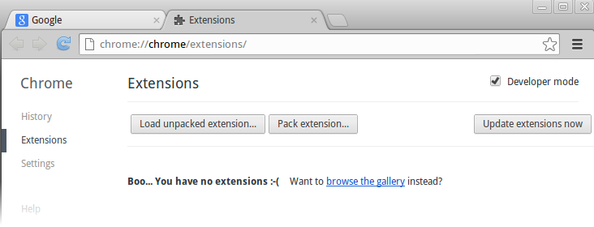
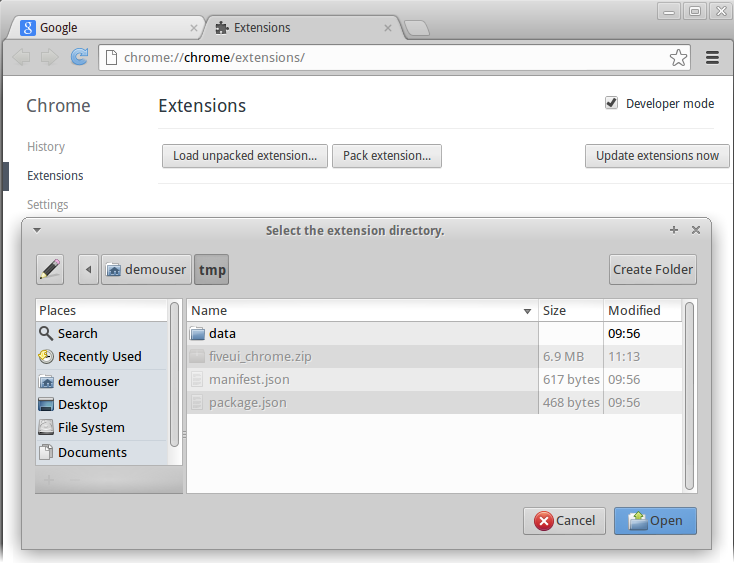
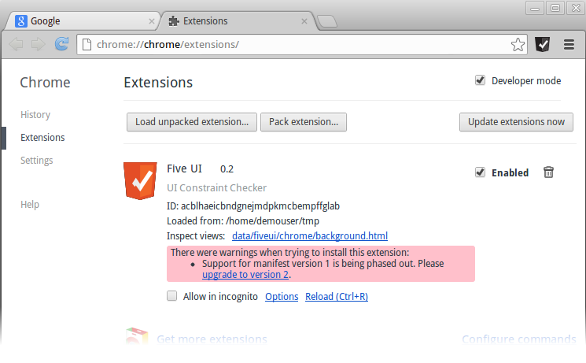

Install Guide
Installing the FiveUI Extension
FiveUI is distributed as source code and as a browser extension for both Google Chrome and Mozilla Firefox. This document describes the install process for these browsers, assuming that you have the FiveUI extension on your local computer.
Installing FiveUI in Firefox
FiveUI is currently supported on Firefox 24 (Mozilla's extended support release version).
The FiveUI Firefox extension is packaged in a file called fiveui.xpi. Locate this file in your distribution (or download) and take note of the location for the following steps. We will assume that it is located at d:\binaries\fiveui.xpi
- Open Firefox, and load the
Add-onsfrom the main Firefox menu.

Access the Firefox Add-ons Manager from the main Firefox menu
- Within the
Add-ons Manager, open the Gear menu and selectInstall Add-on From File.
The Add-ons Manager Gear menu has an install from file entry.
A file dialog should open, use this to browse to the
fiveui.xpifile (in our case,d:\binaries\fiveui.xpi).Click OK, and a warning dialog should appear. This dialog warns that the FiveUI author is not verified. Because this is a development release of FiveUI, the xpi file is not cryptographically signed, and therefore, Firefox is unable to verify the author identification.
Click on the
Install Nowbutton once it becomes active.
FiveUI is now installed. The Getting Started guide explains how to configure and use the extension.
Installing FiveUI in Chrome
All recent versions of Google Chrome should support FiveUI.
Chrome is primarily designed to install extensions from the on-line extension marketplace. You can install FiveUI from that marketplace. However, local extensions can also be installed by unpacking the extension file, in this case fiveui_chrome.zip, and enabling Chrome's extension developer mode.
The following steps describe how to install FiveUI in Chrome, using an extension file from the local file system.
Download fiveui_chrome.zip and take note of the location for the following steps. We will assume that it is located at d:\binaries\fiveui_chrome.zip
- Use your system's archive utility to unpack the zip file
fiveui_chrome.zip. - Open Chrome and navigate to the extensions manager. The extensions manager can be reached through Chrome's menu system or by entering
chrome://extensionsin the URL bar. Check the box labeled "Developer Mode" at the top of the extensions manager page (if it is not already checked):
Click "Load Unpacked Extension" and choose the directory where you unpacked the Chrome extension file. The directory should contain the file
manifest.json.The FiveUI extension should now appear in the extension manager and the FiveUI button should appear in the Chrome toolbar as shown:
Note: The warning message reading "Support for manifest version 1 is being phased out." is a known issue and does not currently affect the FiveUI extension.
FiveUI is now installed. The Getting Started guide explains how to configure and use the extension.